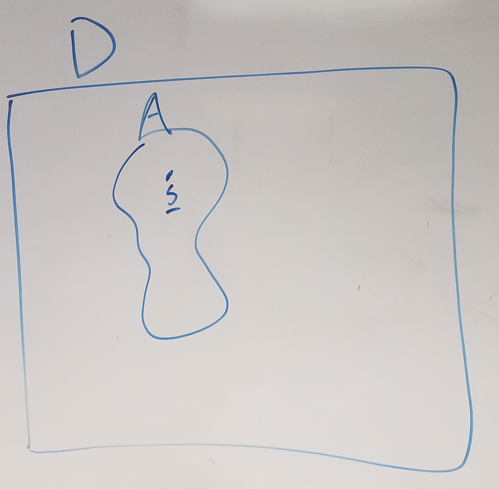
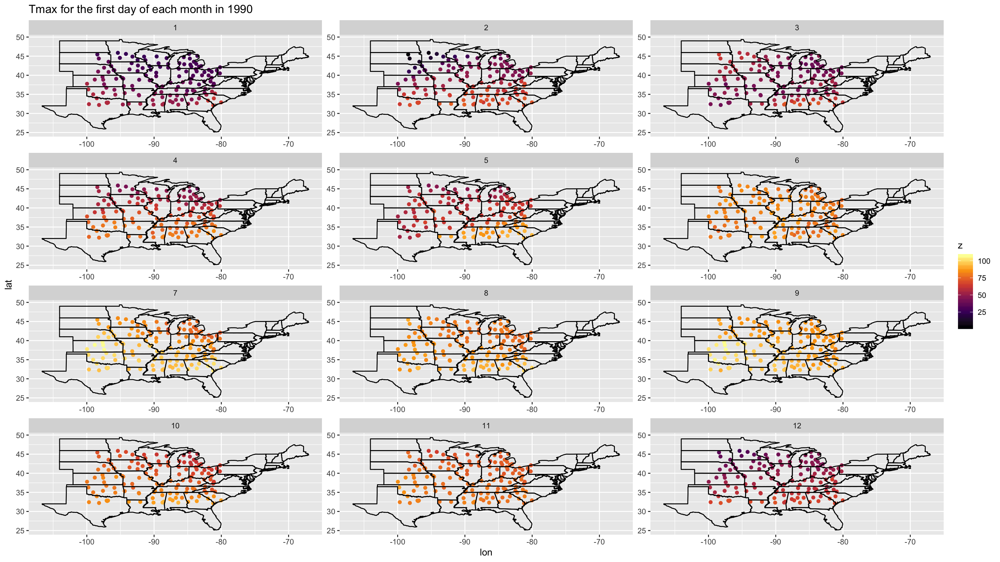
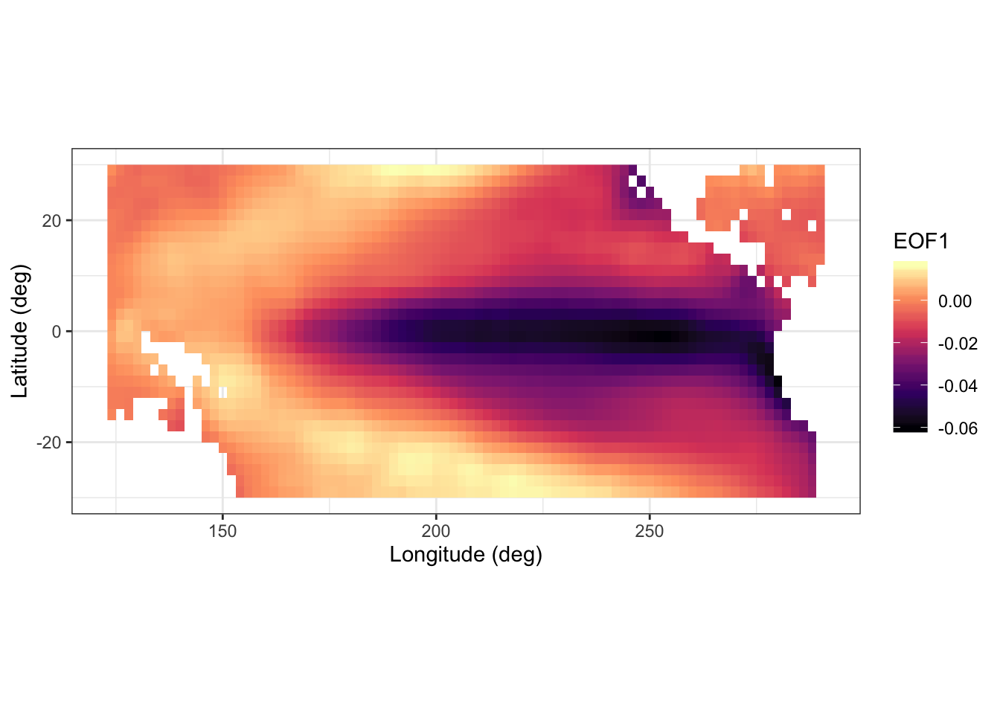

2 Day 2
2.1 Spatial Data
All data occur at some location is space and time. For know we focus on spatial analyses and will later extend this to spatio-temporal analyses. Let \(\mathcal{D}\) represent the spatial domain and let \(\mathbf{s}\) be a spatial location. In general, we will let \(\mathcal{A} \subset \mathcal{D}\) be a subdomain of the spatial region of \(\mathbf{D}\).

2.2 Types of spatial data
There are three primary types of spatial data that we are going to consider
2.2.1 Geostatistical data
- Occur everywhere
- continuous support
- examples: temperature, precipitation
## Observations: 730,486
## Variables: 10
## $ julian <int> 726834, 726835, 726836, 726837, 726838, 726839, 726840, 726841…
## $ year <int> 1990, 1990, 1990, 1990, 1990, 1990, 1990, 1990, 1990, 1990, 19…
## $ month <int> 1, 1, 1, 1, 1, 1, 1, 1, 1, 1, 1, 1, 1, 1, 1, 1, 1, 1, 1, 1, 1,…
## $ day <int> 1, 2, 3, 4, 5, 6, 7, 8, 9, 10, 11, 12, 13, 14, 15, 16, 17, 18,…
## $ id <dbl> 3804, 3804, 3804, 3804, 3804, 3804, 3804, 3804, 3804, 3804, 38…
## $ z <dbl> 35, 42, 49, 59, 41, 45, 46, 42, 54, 43, 52, 38, 32, 43, 53, 55…
## $ proc <chr> "Tmax", "Tmax", "Tmax", "Tmax", "Tmax", "Tmax", "Tmax", "Tmax"…
## $ lat <dbl> 39.35, 39.35, 39.35, 39.35, 39.35, 39.35, 39.35, 39.35, 39.35,…
## $ lon <dbl> -81.43333, -81.43333, -81.43333, -81.43333, -81.43333, -81.433…
## $ date <date> 1990-01-01, 1990-01-02, 1990-01-03, 1990-01-04, 1990-01-05, 1…## Only plot the states with data
states <- map_data("state")
states <- states %>%
subset(!(region %in% c(
"washington", "oregon", "california", "nevada", "idaho", "utah",
"arizona","montana", "wyoming", "colorado", "new mexico"
)
))
## generate map
NOAA_df_1990 %>%
subset(year == 1990 & day == 1 & proc == "Tmax") %>%
ggplot(aes(x = lon, y = lat, color = z)) +
geom_point() +
facet_wrap(~ month, scales = "free", nrow = 4) +
geom_polygon(data = states, aes(x = long, y = lat, group = group),
inherit.aes = FALSE, fill = NA, color = "black") +
scale_color_viridis_c(option = "inferno") +
ggtitle("Tmax for the first day of each month in 1990")
2.2.2 Areal data
- Occur only over discrete areas
- can be thought of as an integral of a continuous process over a subdomain \(\mathcal{A} \in \mathcal{D}\)
- examples: cases of a disease by counties, votes in an election by congressional district
## Observations: 116
## Variables: 5
## $ Description <chr> "Per capita personal income (dollars)", "Per capita perso…
## $ NAME10 <fct> "Adair, MO", "Andrew, MO", "Atchison, MO", "Audrain, MO",…
## $ X1970 <int> 2723, 3577, 3770, 3678, 3021, 2832, 3263, 2508, 2147, 349…
## $ X1980 <int> 7399, 7937, 5743, 8356, 7210, 7445, 8596, 6125, 5431, 923…
## $ X1990 <int> 12755, 15059, 14748, 15198, 12873, 13530, 13195, 11854, 1…## Observations: 214,279
## Variables: 53
## $ long <dbl> 627911.9, 627921.4, 627923.0, 627947.8, 627956.5, 627994.8…
## $ lat <dbl> 4473554, 4473559, 4473560, 4473577, 4473583, 4473612, 4473…
## $ order <int> 1, 2, 3, 4, 5, 6, 7, 8, 9, 10, 11, 12, 13, 14, 15, 16, 17,…
## $ hole <lgl> FALSE, FALSE, FALSE, FALSE, FALSE, FALSE, FALSE, FALSE, FA…
## $ piece <fct> 1, 1, 1, 1, 1, 1, 1, 1, 1, 1, 1, 1, 1, 1, 1, 1, 1, 1, 1, 1…
## $ id <chr> "0", "0", "0", "0", "0", "0", "0", "0", "0", "0", "0", "0"…
## $ group <fct> 0.1, 0.1, 0.1, 0.1, 0.1, 0.1, 0.1, 0.1, 0.1, 0.1, 0.1, 0.1…
## $ STATEFP10 <fct> 29, 29, 29, 29, 29, 29, 29, 29, 29, 29, 29, 29, 29, 29, 29…
## $ COUNTYFP10 <fct> 045, 045, 045, 045, 045, 045, 045, 045, 045, 045, 045, 045…
## $ COUNTYNS10 <fct> 00758477, 00758477, 00758477, 00758477, 00758477, 00758477…
## $ GEOID10 <fct> 29045, 29045, 29045, 29045, 29045, 29045, 29045, 29045, 29…
## $ NAME10 <fct> "Clark, MO", "Clark, MO", "Clark, MO", "Clark, MO", "Clark…
## $ NAMELSAD10 <fct> Clark County, Clark County, Clark County, Clark County, Cl…
## $ LSAD10 <fct> 06, 06, 06, 06, 06, 06, 06, 06, 06, 06, 06, 06, 06, 06, 06…
## $ CLASSFP10 <fct> H1, H1, H1, H1, H1, H1, H1, H1, H1, H1, H1, H1, H1, H1, H1…
## $ MTFCC10 <fct> G4020, G4020, G4020, G4020, G4020, G4020, G4020, G4020, G4…
## $ CSAFP10 <fct> NA, NA, NA, NA, NA, NA, NA, NA, NA, NA, NA, NA, NA, NA, NA…
## $ CBSAFP10 <fct> 22800, 22800, 22800, 22800, 22800, 22800, 22800, 22800, 22…
## $ METDIVFP10 <fct> NA, NA, NA, NA, NA, NA, NA, NA, NA, NA, NA, NA, NA, NA, NA…
## $ FUNCSTAT10 <fct> A, A, A, A, A, A, A, A, A, A, A, A, A, A, A, A, A, A, A, A…
## $ ALAND10 <dbl> 1307146971, 1307146971, 1307146971, 1307146971, 1307146971…
## $ AWATER10 <dbl> 18473547, 18473547, 18473547, 18473547, 18473547, 18473547…
## $ INTPTLAT10 <fct> +40.4072748, +40.4072748, +40.4072748, +40.4072748, +40.40…
## $ INTPTLON10 <fct> -091.7294720, -091.7294720, -091.7294720, -091.7294720, -0…
## $ AREA <dbl> 1324937990, 1324937990, 1324937990, 1324937990, 1324937990…
## $ PERIMETER <dbl> 161503.6, 161503.6, 161503.6, 161503.6, 161503.6, 161503.6…
## $ COUNTY10_ <int> 2, 2, 2, 2, 2, 2, 2, 2, 2, 2, 2, 2, 2, 2, 2, 2, 2, 2, 2, 2…
## $ COUNTY10_I <int> 115, 115, 115, 115, 115, 115, 115, 115, 115, 115, 115, 115…
## $ POP90 <int> 7547, 7547, 7547, 7547, 7547, 7547, 7547, 7547, 7547, 7547…
## $ WHITE90 <int> 7528, 7528, 7528, 7528, 7528, 7528, 7528, 7528, 7528, 7528…
## $ BLACK90 <int> 3, 3, 3, 3, 3, 3, 3, 3, 3, 3, 3, 3, 3, 3, 3, 3, 3, 3, 3, 3…
## $ ASIANPI90 <int> 4, 4, 4, 4, 4, 4, 4, 4, 4, 4, 4, 4, 4, 4, 4, 4, 4, 4, 4, 4…
## $ AMIND90 <int> 7, 7, 7, 7, 7, 7, 7, 7, 7, 7, 7, 7, 7, 7, 7, 7, 7, 7, 7, 7…
## $ OTHER90 <int> 5, 5, 5, 5, 5, 5, 5, 5, 5, 5, 5, 5, 5, 5, 5, 5, 5, 5, 5, 5…
## $ HISP90 <int> 26, 26, 26, 26, 26, 26, 26, 26, 26, 26, 26, 26, 26, 26, 26…
## $ POP00 <int> 7416, 7416, 7416, 7416, 7416, 7416, 7416, 7416, 7416, 7416…
## $ WHITE00 <int> 7329, 7329, 7329, 7329, 7329, 7329, 7329, 7329, 7329, 7329…
## $ BLACK00 <int> 5, 5, 5, 5, 5, 5, 5, 5, 5, 5, 5, 5, 5, 5, 5, 5, 5, 5, 5, 5…
## $ ASIAN00 <int> 5, 5, 5, 5, 5, 5, 5, 5, 5, 5, 5, 5, 5, 5, 5, 5, 5, 5, 5, 5…
## $ AMIND00 <int> 15, 15, 15, 15, 15, 15, 15, 15, 15, 15, 15, 15, 15, 15, 15…
## $ HAWNPI00 <int> 1, 1, 1, 1, 1, 1, 1, 1, 1, 1, 1, 1, 1, 1, 1, 1, 1, 1, 1, 1…
## $ OTHER00 <int> 16, 16, 16, 16, 16, 16, 16, 16, 16, 16, 16, 16, 16, 16, 16…
## $ MULTRA00 <int> 45, 45, 45, 45, 45, 45, 45, 45, 45, 45, 45, 45, 45, 45, 45…
## $ HISP00 <int> 52, 52, 52, 52, 52, 52, 52, 52, 52, 52, 52, 52, 52, 52, 52…
## $ POP10 <int> 7139, 7139, 7139, 7139, 7139, 7139, 7139, 7139, 7139, 7139…
## $ WHITE10 <int> 7011, 7011, 7011, 7011, 7011, 7011, 7011, 7011, 7011, 7011…
## $ BLACK10 <int> 19, 19, 19, 19, 19, 19, 19, 19, 19, 19, 19, 19, 19, 19, 19…
## $ ASIAN10 <int> 23, 23, 23, 23, 23, 23, 23, 23, 23, 23, 23, 23, 23, 23, 23…
## $ AMIND10 <int> 9, 9, 9, 9, 9, 9, 9, 9, 9, 9, 9, 9, 9, 9, 9, 9, 9, 9, 9, 9…
## $ HAWNPI10 <int> 0, 0, 0, 0, 0, 0, 0, 0, 0, 0, 0, 0, 0, 0, 0, 0, 0, 0, 0, 0…
## $ OTHER10 <int> 5, 5, 5, 5, 5, 5, 5, 5, 5, 5, 5, 5, 5, 5, 5, 5, 5, 5, 5, 5…
## $ MULTRA10 <int> 72, 72, 72, 72, 72, 72, 72, 72, 72, 72, 72, 72, 72, 72, 72…
## $ HISP10 <int> 42, 42, 42, 42, 42, 42, 42, 42, 42, 42, 42, 42, 42, 42, 42…ggplot(MOcounties) +
geom_polygon(aes(x = long,
y = lat, # county boundary
group = NAME10, # county group
fill = log(X1970))) + # log of income
geom_path(aes(x = long, y = lat, group = NAME10)) +
scale_fill_viridis_c(limits = c(7.5, 10.2), option = "plasma", name = "log($)") +
coord_fixed() +
ggtitle("1970") +
xlab("x (m)") +
ylab("y (m)") +
theme_bw()
2.2.3 Point process data
- The count and location of the data are random
- examples: tornados, lightning strikes
# uncomment out this line to download the data
# load(url("http://github.com/mgimond/Spatial/raw/master/Data/ppa.RData"))
# save(starbucks, ma, pop, file = here::here("data", "ppa-starbucks.RData"))
load(here::here("data", "ppa-starbucks.RData"))
glimpse(starbucks)## List of 5
## $ window :List of 4
## ..$ type : chr "rectangle"
## ..$ xrange: num [1:2] 648032 917741
## ..$ yrange: num [1:2] 4609785 4748107
## ..$ units :List of 3
## .. ..$ singular : chr "unit"
## .. ..$ plural : chr "units"
## .. ..$ multiplier: num 1
## .. ..- attr(*, "class")= chr "unitname"
## ..- attr(*, "class")= chr "owin"
## $ n : int 171
## $ x : num [1:171] 917741 911147 902987 876188 875868 ...
## $ y : num [1:171] 4637151 4628510 4628982 4616741 4616719 ...
## $ markformat: chr "none"
## - attr(*, "class")= chr "ppp"## uses spatstat library
## add the massachusetts polygon
Window(starbucks) <- ma
marks(starbucks) <- NULL
## plot using the plot function from spatstat
plot(starbucks)